Sport tech hub
Website redesign
UX design • UI design
Team • King Iornongu and Michelle Kliem
Responsive Website
Team • King Iornongu and Michelle Kliem
Responsive Website
The Sport Tech Hub website needed to be adapted to attract its audiences by providing clear offerings. The design and its usability was crucial for success and promoting STH across the UK.
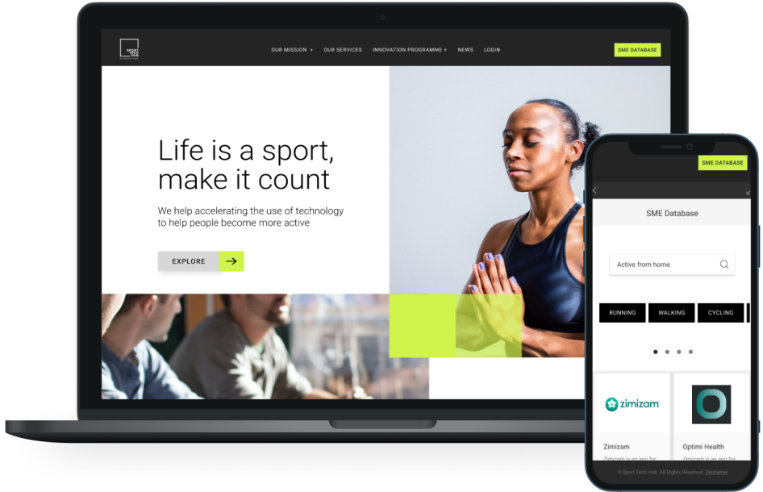
Sport Tech Hub is London's Digital & Tech home for Sport and Physical Activity, offering support to startups, entrepreneurs and innovation partners to grow their companies through mentorship, events and funding. I worked on the redesign of their website as a part of a team for
Experience Haus.
overview
The main problem of this project was to have the website adapted to make it more appealing to both target audiences and make the different services on offer clear for each. To address the challenge of making the website appealing and easy to navigate, we conducted extensive research on user personas and user journeys. Through this research we were able to identify the key needs and goals of Sport Tech Hub's target audience, and tailor the design of the website accordingly.
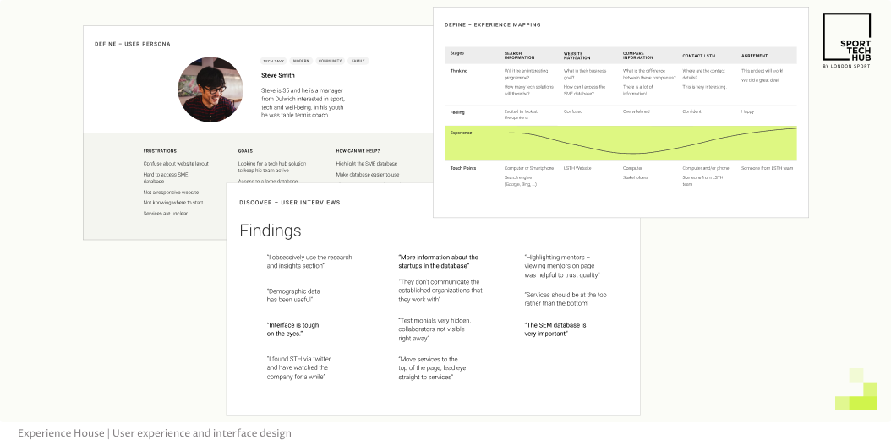
development process
After identifying the user's needs and goals, we began to develop wireframes and prototypes that were tested with real users. This allowed us to identify any usability issues and make necessary adjustments before moving forward with the final design.
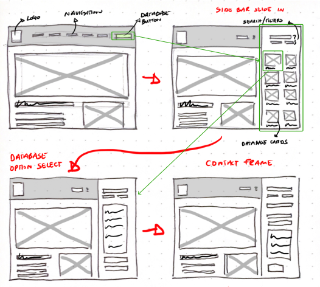
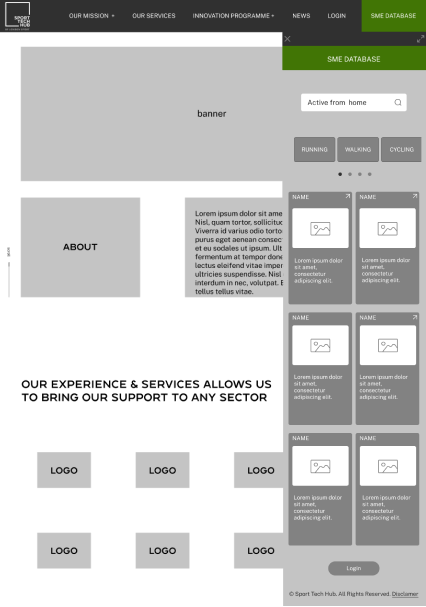
user interface
One of the key principles we followed in designing the Sport Tech Hub website was to prioritize clear and easy navigation. We achieved this by using a consistent and intuitive layout throughout the site, with menus and links clearly marked and easily accessible.
The company wanted to maintain its brand colours. However, to facilitate clarity and accessibility, we changed the combination adding a light background and ensuring the text contrasts suitably against its background colour.
The company wanted to maintain its brand colours. However, to facilitate clarity and accessibility, we changed the combination adding a light background and ensuring the text contrasts suitably against its background colour.
Previous design:

New design:
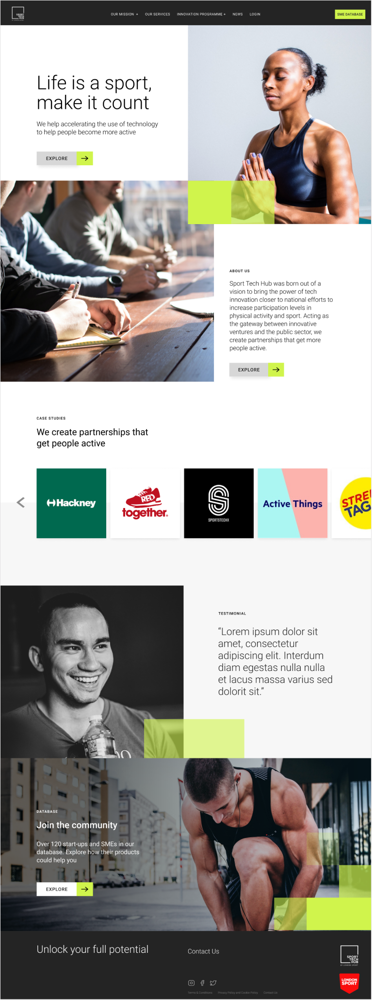
We established that to improve the user experience we had to focus on highlighting the database making it easier to use and navigate and also facilitating the communication between the company and its target audiences by improving the sign-up process.
Database:
To achieve this, we incorporated clear call-to-action buttons and minimised the number of clicks required to access important information. Incorporating a search bar at the top of the database to make it easier for users to find the information they need. Also, using tags to categorise the different services offered makes it easier for users to understand what each service entails and locate the one they need.
Deliver — Wireframes:
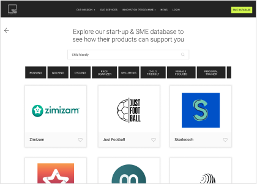
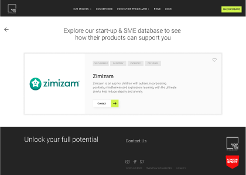
Experience House | User experience and interface design
On the sign up flow, we made sure that the process was straightforward to follow, minimising the number of steps required. Our team also paid attention to the overall aesthetics of the website by implementing clean and modern design elements such as using appropriate font sizes and styles for easy readability.
Sign up flow:
Deliver — Wireframes:
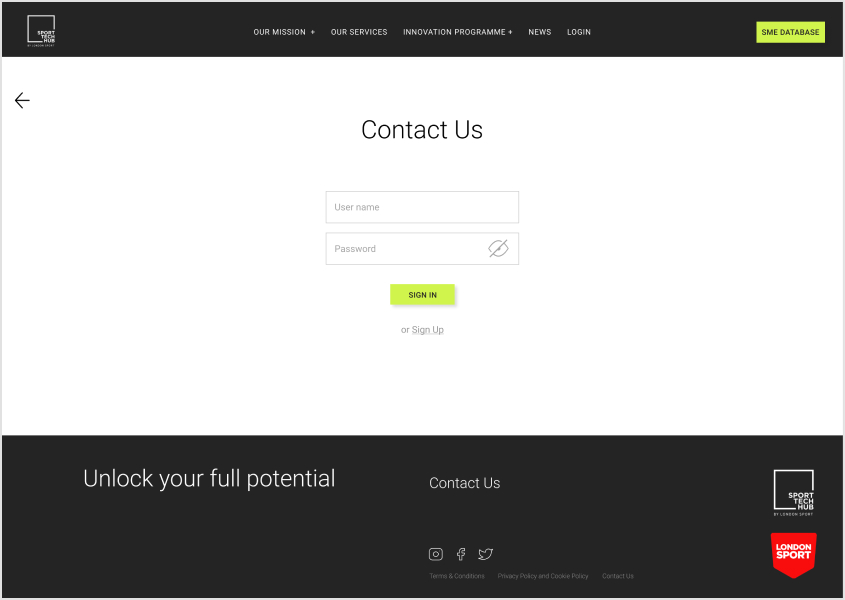
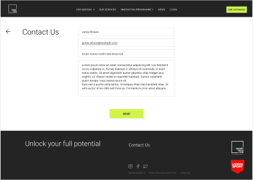
Experience House | User experience and interface design
responsiveness
Responsiveness and accessibility were also key factors in the development process. We ensured that the Sport Tech Hub website is optimised for use on a variety of devices, including desktop computers, laptops, tablets and mobile phones.
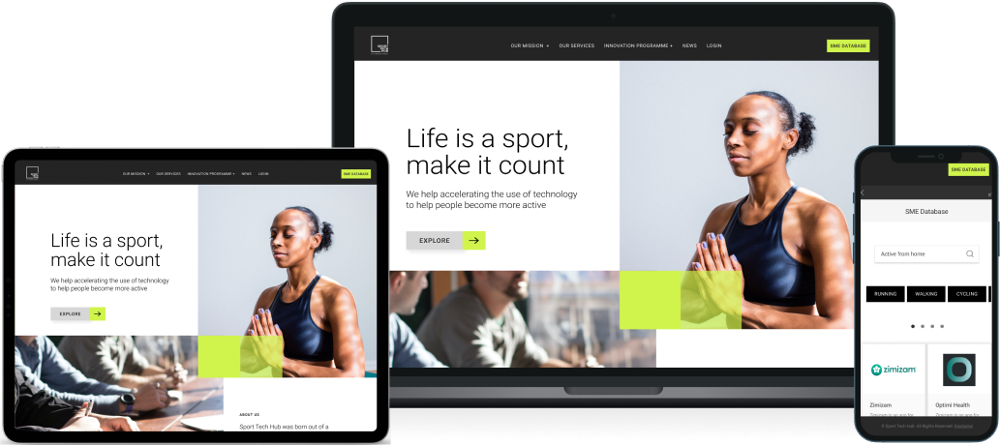
testing
Prototyping allowed us to test the website on different devices and make necessary adjustments. Overall, our focus on usability and user experience has allowed us to create a Sport Tech Hub website that is easy to navigate, informative, and tailored to the needs of its users, ultimately achieving the company’s goal of strengthening their online presence and improving communication with their target audiences.
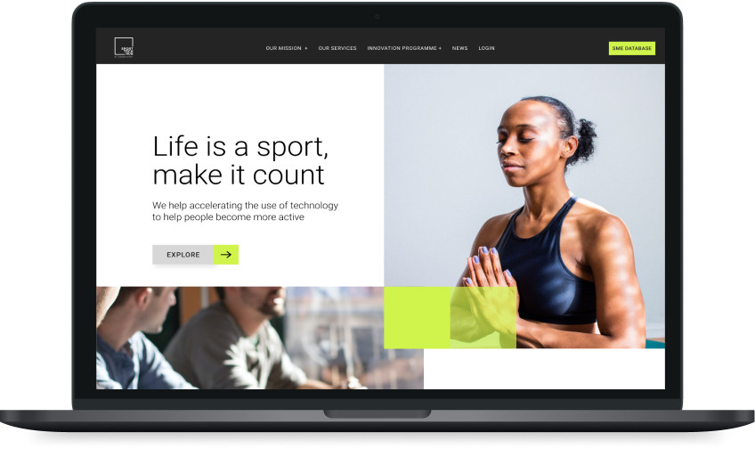
View Prototype
what i learned
We designed a basic sign-up process to make it simpler for new users to get involved. However, I think we can do better by adding social media options to make it easier for people to register. Also, I would remove their SME database from the sidebar to its own full page to make the page more user-friendly as it can be confusing for someone who isn’t familiar with the site. I also think I can do better by designing two flows based on the target audience. The first flow would be for innovators looking for sports solutions while the second flow would be for start-ups looking to make people more active. By incorporating these new features into the website we will ensure it meets the needs of the users and gives them the best experience possible.
Check Other Projects
Would you like to work together?
Contact me